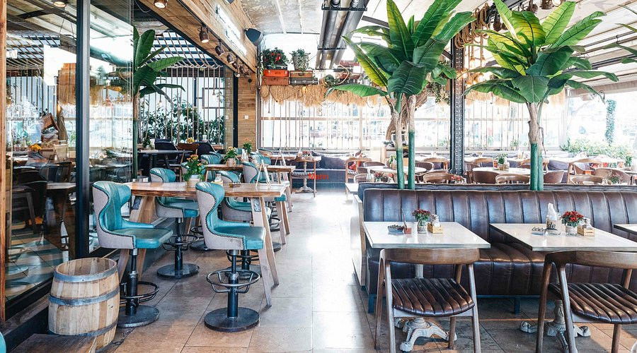

Neler Yapabilirsiniz?
PortCity'de hayat 24 saat devam eder! İster gündüz güneşin tadını çıkarın, ister gece mehtap turlarıyla şehrin ışıklarını denizden izleyin.
Öne Çıkan Aktiviteler

Meşhur "Yakamoz" Tekne Turlarımız
Detaylı Bilgi (Mouse Üzerine Getir)
🚢 Tekne Turu & Mehtap Gezisi
🤿 Dalış Deneyimi
Lezzet ve Keyif Durakları
Yorgunluğunuzu atmak için harika bir mola verin. Port City'de deniz sesleri eşliğinde çay ve yemek keyfini doyasıya yaşayabilirsiniz.

PortCity Sahil Kafesi